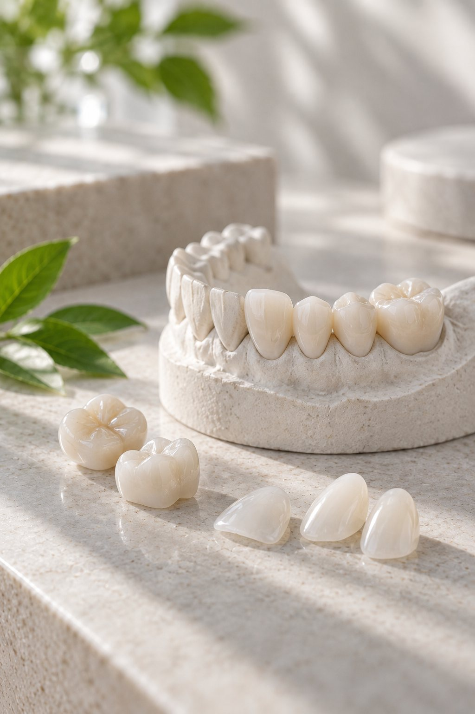

Солодухин Евгений Викторович
Ортопед
Коронки, мосты, протезы на имплантах и All-on-4
Восстанавливаем зубы и прикус коронками, винирами, вкладками и протезами. Будущий результат можно увидеть ещё до начала лечения.

ПротезированиеОртопедическая стоматология восстанавливает зубные ряды и оптимизирует прикус. До постоянной реставрации зуб защищает светоотверждаемая временная пломба, а точность моделей обеспечивают винил-полисилоксановые оттиски или интраоральное 3D-сканирование.
Для эстетики используем цельноциркониевые коронки и керамику на каркасе из оксида циркония, керамику E.max для виниров и коронок. Коронки на импланты ставим на индивидуальные абатменты из оксида циркония.
Восковое моделирование Wax-Up и композитный Mock-Up показывают форму будущих зубов до начала лечения.
Wax-Up и Mock-Up: результат до лечения
Цирконий, E.max, металлокерамика
Интраоральное 3D-сканирование
Съёмные протезы Acry Free и бюгели
Цены на 15.10.2026. Точную стоимость врач называет после осмотра.
Ортопед
Коронки, мосты, протезы на имплантах и All-on-4
Ортопед
Коронки, виниры, съёмные и несъёмные протезы
Металлокерамическая коронка стоит от 26 400 ₽, цельноциркониевая и керамика E.max от 34 100 ₽. Врач предложит варианты с ценами на консультации.
Да. Восковое моделирование Wax-Up и композитный Mock-Up показывают форму будущих зубов до начала лечения.
Бюгельные, частично и полностью съёмные, эластичные протезы Acry Free и косметическая пластинка на 1–3 зуба.